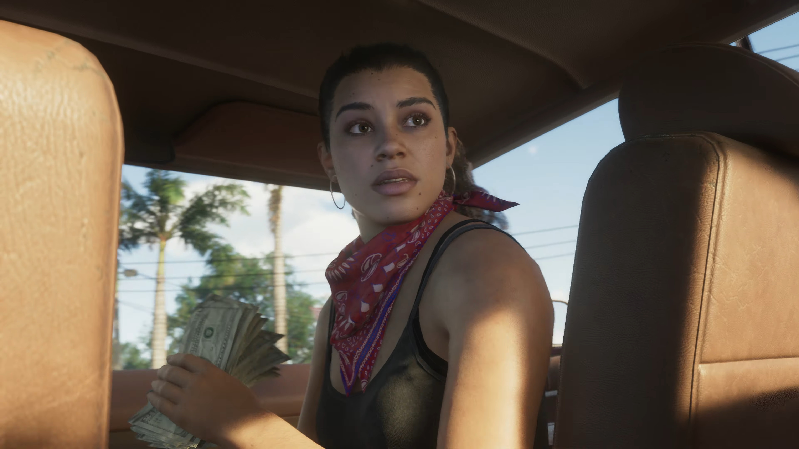
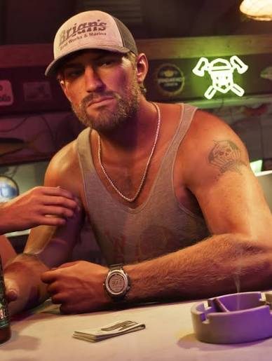

Lucia Caminos
Lúcia Caminos é uma das protagonistas de Grand Theft Auto VI. Após sair da prisão, ela busca uma nova oportunidade de vida, mas acaba envolvida em situações perigosas no submundo de Leonida. Determinada e corajosa, Lúcia está disposta a enfrentar desafios para construir seu próprio futuro. Ela sabe que em Vice City, o crime nunca dorme
Diz a lenda nas ruas: Confiança é uma arma de dois gumes
. O
lançamento do jogo está previsto para
. Suas ações iniciais envolvem
pequenos furtos a lojas de conveniência, onde ela usa um disfarce
escrito SYSTEM ERROR no sistema de segurança. A ficha
criminal dela listava o nome errado, então o juiz ordenou:
Lúcia Santos Lucia Caminos

Jason Duval
Em Grand Theft Auto VI, a história acompanha Jason Duval e Lucia Caminos em uma jornada marcada por crimes, ambição, desafios e sobrevivência. Ambientado no estado fictício de Leonida, inspirado na Flórida, o jogo traz de volta a icônica Vice City em uma versão moderna e repleta de possibilidades.
Sempre atento aos movimentos de seus alvos, Jason utiliza seu celular para rastrear pistas, localizar contatos e acompanhar atividades suspeitas. Para garantir o sigilo, seus contatos costumam enviar coordenadas camufladas em mensagens usando fórmulas químicas de reagentes controlados, como o CaCl2, ou códigos de transação com potências escondidas de 106 dólares. Em meio ao submundo criminoso de Leonida, cada informação pode representar uma oportunidade ou uma ameaça. Em seu braço, a palavra Loyalty está marcada como uma lembrança de seus princípios e compromissos. Ao lado dele, cada decisão tem consequências, cada movimento exige cautela e sobreviver pode ser apenas o começo de uma jornada ainda mais perigosa.
Após deixar a carreira militar, Jason acabou nas Ilhas de Leonida, onde passou a trabalhar para traficantes locais. Atualmente, vive em uma propriedade de Brian Heder, um veterano do tráfico na região, em troca de serviços e trabalhos ligados às atividades criminosas.
Grand Theft Auto VI — Uma nova história. Um novo mundo. Uma nova jornada.
